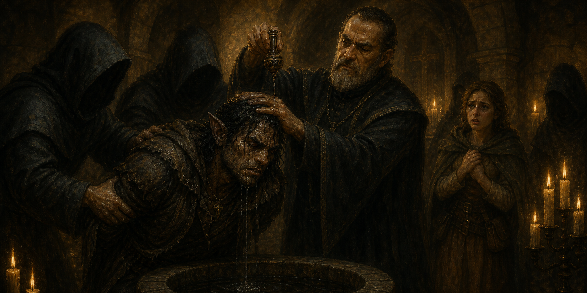

Chapter 4: Baptized
Dark Petals


Dark Petals
15048.11.18
布朗睜開雙眼，發現自己又回到了那個熟悉的地下室，也就是服從神社的地底。然而這一次，身邊不再有那些可怖的屍骨圍坐成圈，只有他獨自躺在地上，以及一旁冷冷看著他的羅傑。
布朗質問羅傑這到底是怎麼回事。羅傑表示，自己只是在做一個拉索斯教徒該做的事而已，不必太介意。他還補充說，受洗成為拉索斯教徒的過程也許會非常可怕，而且不是每個人都撐得過去，希望布朗自己加油。說完後，他便走上樓梯，離開了地下室。
布朗努力想站起身，卻發現自己的手腳都被綁住。在漆黑的空間裡，有一雙發光的眼睛正在盯著他，那東西還低聲唸著他聽不懂的語言。布朗感到無助，只能拼命掙扎，但始終沒能成功。他注意到自己的背包就在不遠處，卻依然搆不到。隨著那頭生物慢慢靠近，他感覺牠口中吟誦的似乎是拉索斯的祝禱文，可是那到底是什麼生物，布朗依然無法判斷。此刻的他，也許只能等著那東西靠近，再隨機應變了。
就在那頭生物逼近時，布朗終於掙脫了束縛，卻找不到通往樓上的出口。那頭生物一步一步逼近，布朗只覺得頭痛欲裂、噁心反胃，眼前盡是一片漆黑。黑暗之中，就連他的黑暗視覺也毫無作用。忽然之間，布朗意識到自己所處的地方似乎已經不是地下室了。什麼地下室？是哪裡的地下室？轉瞬之間，他發現自從進入魏斯科以後的記憶竟全部消失了。慌亂之中，他隨便朝一個方向衝了出去，卻發現不論怎麼跑都沒有邊界，甚至連頭痛也愈來愈劇烈。
布朗從背包裡抽出短劍插進地面，再用繩子綁住劍柄，試圖順著繩索探索周圍空間，卻發現等繩子拉到盡頭，仍然什麼都碰不到。他又改用短弓射出一箭，卻在不久之後，看見那支箭竟然從自己後方穿了回來。這個空間顯然是一個無限循環的地方。布朗翻出包裡的黑蓮花花瓣，先試著舔了一口，沒有任何變化，於是又拿起另一片直接吞了下去。然而除了更強烈的一陣莫名恐懼外，依舊沒有任何改變。失望之餘，布朗只好坐下來稍作休息。
當布朗準備再次探索這個空間時，他忽然聽見腦中傳來一個人聲，說著自己聽不懂的話。布朗試著回應，而在一陣劇烈頭痛後，他竟發現自己又回到了地下室。此刻，他的手正輕輕放在方才那頭生物粗糙的毛皮上，而那頭生物竟溫順地伏坐在地。坐在地上的布朗抬起頭，看見面前站著一個高大的人影，卻看不清他的臉。布朗試著和對方交談，那人只對他說了一句：「你醒了。」那聲音彷彿是成千上萬道不同的聲音同時疊在一起，說著相同的話。布朗站起身來，發現眼前這人穿著和卡魯神父一模一樣的服裝，可是他的臉卻像一團模糊的霧，完全看不清楚。
這個看似神父的人對布朗說：「你可以走了，但你要記住，從今以後，你會走上拉索斯之路。」與此同時，通往樓上的門無聲地打開了。布朗便朝那方向走去，一步步往上爬，而屬於魏斯科的記憶也一點一點回到腦海。當他爬到階梯頂端時，聽見底下傳來一聲低低的動物嗚鳴。布朗回頭往下看，剛才那頭生物正抬頭望著他，眼神裡沒有絲毫惡意。「拉茲特獸。」那疑似神父的聲音在布朗腦中響起。布朗最後又看了那頭生物一眼，心中忽然升起一種領悟：那東西也曾經是個人……隨後，他轉身離開了樓梯口。
空蕩蕩的教堂裡，什麼人都沒有。昆妮、羅傑和瑪芬先生全都不見了，而外頭的天空已經亮了。
15048.11.19
布朗決定離開教堂，前往服務中心去找昆妮。當門一打開，昆妮滿臉笑容地迎接客人，但她的眼神裡對布朗只有陌生。布朗試著解釋昨晚兩人和羅傑一起前往教堂的經過，但昆妮完全無法理解，只告訴布朗，看起來他的精神狀況很差。就在這時，布朗聽見昆妮身後傳來一陣狗叫聲。
昆妮從身後抱起一隻巴哥犬，說她今天一早來上班時就看見牠待在這裡，而且一直跟著自己。巴哥犬一看到布朗，便又舔又叫，看起來和他十分親近。經布朗詢問後，昆妮便讓這隻狗跟著他離開了。在布朗眼中，這顯然就是瑪芬先生，但牠卻完全沒有再透過心靈感應和布朗說任何一句話。
接著，布朗又去了凱勒布兄弟的當鋪，然而兄弟倆看著他的眼神也一樣陌生，於是布朗只能失落地離開。
布朗走進酒館，簡單吃了點東西後便入住旅店。這一天就這麼渾渾噩噩地過去了。
15048.11.20
清醒之後，布朗決定再去一趟教堂，卻發現教堂大門竟然關著，連一些原本想進去禱告的民眾見狀都露出失望的神情。
布朗決定離開魏斯科，但臨走前還是再次去服務中心見了昆妮。昆妮認得這名昨天才來過的客人，熱情地和他打招呼，可布朗心裡很清楚，兩人過去共享過的那些記憶，在昆妮腦中根本不存在。於是，布朗向昆妮買了一張附近的地圖，然後帶著瑪芬先生一起走向魏斯科的城門。
當布朗一腳踏出城門時，他立刻在腦海中聽見瑪芬先生激動地大喊：「快跑！快跑！」同時，他也看見剛衝出城門的瑪芬先生飛快地朝外狂奔，於是布朗也跟著追了上去。雖然他不知道究竟發生了什麼事，但憑著對瑪芬先生的信任，以及某種難以言喻的直覺，布朗使勁往遠方跑去。然而，他心中卻同時湧上一股幾乎壓抑不住的衝動，叫他回頭再看一眼。
在布朗原本的認知裡，魏斯科是一座風光明媚、充滿朝氣、遊人如織的觀光城市，擁有悠久的歷史，也有值得期待的未來。
但此刻映入他眼中的，卻是一座籠罩在黑暗中的城市。
沒有半點生氣，只剩滿地廢墟。
難道魏斯科的一切都只是一場夢嗎？布朗把手伸進背包，發現自己摘下來的那些花瓣還在。他知道，這不是夢。但他仍然不知道魏斯科究竟發生了什麼。他只知道，等到自己變得更強，甚至有了更多同伴之後，他一定要再回到這裡，把真相查清楚。
如果，如果昆妮還在，如果昆妮曾經真真切切地存在過，也許這裡依然值得他回來。
15048.11.18
Brown opened his eyes and found himself back in that familiar cellar beneath the Shrine of Obedience. This time, however, there were no rings of terrible corpses seated around him. Only Brown lay there alone on the floor, with Roger standing nearby and watching him coldly.
Brown demanded to know what was going on. Roger replied that he was only doing what any follower of Laxthos ought to do, so Brown should not take it too personally. He added that the process of being baptized into the faith of Laxthos could be horrifying, and that not everyone survived it. He hoped Brown would manage. With that, Roger climbed the stairs and left the cellar.
Brown tried to stand and discovered that his hands and feet were tied. In the pitch-black space, a pair of glowing eyes stared at him while some creature murmured words he could not understand. Brown felt helpless. He strained against the ropes, but could not get free. He saw his backpack lying not far away, yet still beyond his reach. As the creature slowly approached, Brown sensed that it was chanting some kind of Laxthosian prayer, but he still could not tell what sort of being it was. At that moment, all he could do was wait for it to come closer and react when the time came.
As the creature closed in, Brown finally broke free, only to discover that he could not find any exit leading upstairs. The thing kept advancing. Brown's head throbbed, his stomach churned, and the world before him went black. Even his darkvision was useless in that darkness. Then he realized that he no longer seemed to be in the cellar at all. What cellar? Whose cellar? In an instant, every memory he had of arriving in Wescoe vanished. Panicking, he ran in a random direction, but no matter how far he went, he found no boundary, and his headache only grew worse.
Brown pulled a short sword from his bag, stabbed it into the ground, and tied a rope to it, hoping to use the line to explore the surrounding space. Even when the rope reached its full length, it touched nothing. Next he drew his bow and fired an arrow, only to see the same arrow come flying back from behind him a short while later. The place was clearly an endless looping space. Brown then took out the black lotus petals from his pack. He first licked one, but nothing happened, so he picked up another and swallowed it whole. Aside from a wave of strange fear, there was still no change. Disappointed, Brown sat down to rest for a moment.
Just as he was preparing to explore again, Brown heard a human voice in his mind speaking words he did not understand. He tried to answer, and after a burst of searing pain in his head, he suddenly found himself back in the cellar. His hand now rested lightly on the rough fur of the creature from before, and the beast was lying there calmly and obediently. Brown looked up from where he sat and saw a tall figure standing in front of him, though he could not make out the face. He tried speaking, and the figure replied only, "You're awake." The voice sounded like thousands of different voices layered together, all speaking the same words at once. Brown stood up and realized that the figure wore the exact same robes as Father Karu, but where its face should have been there was only a blurred haze.
The priest-like figure told him, "You may leave, but remember this: from now on, you will walk the path of Laxthos." At the same time, the door leading upstairs silently opened. Brown walked toward it and climbed step by step, his memories of Wescoe slowly returning along the way. When he reached the top of the stairs, he heard a low animal cry from below. Looking back down, he saw the creature from before staring up at him with no malice at all in its eyes. "A Razite Beast," the priest-like voice said inside his mind. Brown looked at the creature one last time and was struck by a sudden realization: that thing had once been human as well. Then he turned and left the stairwell behind.
The church was empty. Queenie, Roger, and Mr. Muffins were all gone. Outside, it was already daylight.
15048.11.19
Brown decided to leave the church and go to the service center to find Queenie. When the door opened, Queenie greeted guests with a bright smile, but there was only unfamiliarity in her eyes when she looked at Brown. He tried to explain what had happened the night before, how the two of them had gone to the church together with Roger, but Queenie could not understand any of it. She only said that Brown looked unwell. Then Brown heard barking from somewhere behind her.
Queenie picked up a pug from behind the desk and explained that when she came to work that morning, the dog had already been there and had been following her ever since. The moment it saw Brown, it licked him and barked excitedly, looking very attached to him. When Brown asked about it, Queenie let the dog leave with him. To Brown, there was no doubt that this was Mr. Muffins, yet the dog did not speak a single word to him through telepathy.
After that, Brown visited the Caleb brothers' pawnshop, but they too looked at him like a stranger. So he left in silence, feeling hollow.
Brown went into a tavern, ate a simple meal, and checked into an inn. The rest of the day passed in a haze.
15048.11.20
When Brown woke up, he decided to visit the church again, only to find the doors shut tight. Even some of the townsfolk who had apparently planned to go inside looked disappointed.
Brown decided to leave Wescoe, but before going, he returned to the service center to see Queenie once more. Queenie recognized him as the guest who had visited the day before and greeted him warmly, but Brown knew full well that none of the memories they had once shared existed in her mind anymore. He bought a local map from her, then set out for the city gate with Mr. Muffins.
The moment Brown stepped beyond the gate, he heard Mr. Muffins screaming in his mind, "Run! Run!" At the same time, he saw the pug bolt forward at full speed outside the walls, and Brown chased after him. He had no idea what was happening, but trusting Mr. Muffins, and guided by some instinct he could not explain, he ran as fast as he could into the distance. Even so, another urge rose inside him almost as strongly, begging him to look back.
In Brown's understanding, Wescoe had been a beautiful and lively tourist city, full of history, full of promise, and crowded with people.
But what he saw now was a city swallowed by darkness.
Lifeless. Nothing but ruins.
Had everything in Wescoe been just a dream? Brown reached into his bag and found that the petals he had taken were still there. He knew it had not been a dream. But he still had no idea what had truly happened to Wescoe. He only knew one thing: when he became stronger, and when he had companions at his side, he would come back and uncover the truth.
If Queenie was still there, if Queenie had ever truly existed, then perhaps this place would still be worth returning to.